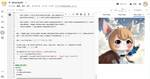
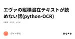
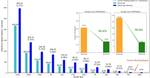

#LLMタグ
https://note.com/hashtag/LLM
「#LLM」の人気タグ記事一覧です
フィード

Google Colab で Janus-1.3B を試す
#LLMタグ
「Google Colab」で「Janus-1.3B」を試したのでまとめました。 【注意】Google Colab Pro/Pro+のA100で動作確認しています。 続きをみる
2時間前
bitnet.cpp で Llama3-8B-1.58-100B-tokens を試す
#LLMタグ
「bitnet.cpp」で「Llama3-8B-1.58-100B-tokens」試したのでまとめました。 1. bitnet.cpp 続きをみる
4時間前
Ai ニュース: NotebookLM オーディオ概要の強化、Playground v3 AI グラフィック デザインの進捗状況など
#LLMタグ
NotebookLM にクールな新機能が追加されました NotebookLM がさらに良くなりました。カスタマイズ可能な概要で、メモの簡単な音声要約を聞くことができます。さらに、ビジネス アプリにも進出し、プロフェッショナルにとって非常に便利なものになっています。これらのアップデートは、@OfficialLoganK のツイートを含め、多くの人に共有されました。 続きをみる
6時間前
1.58bit量子化: Llama3-8B-1.58-100B-tokensを試す 1
1
#LLMタグ
なにやら目を離している隙にxが騒がしい。 以前にMicrosoft Researchが発表していたLLMの3進値 log3≒1.58bit量子化手法を、Llama3-8bに適用して100Bトークンでファインチューニングしたモデルと推論フレームワークの bitnet.cpp が公開されていたようです。 わかりやすい解説ブログ記事も公開されていました。 続きをみる
10時間前
【生成AI】Gemini×ブログ記事生成AIを作成してみた
#LLMタグ
こんにちは。 話題の生成AI、LLMに関する記事です。 今回は、話題のLLMモデルを活用し、ブログ記事の草案作りを手伝ってもらおう！というありふれた企画になります。 ※この記事自体はAIは使ってません！ 続きをみる
12時間前
Interactive Batch Image Editing手法について
#LLMタグ
この論文は「Interactive Batch Image Editing」という新しい手法を提案しています。この手法では、1つの画像に対する編集内容を、他の多数の画像に自動的に適用できるようにし、人間の作業を大幅に減らすことを目指しています。従来の手法では1枚ずつ画像を編集する必要がありましたが、この方法ではユーザーが1枚の画像に編集を施せば、それを自動で他の画像にも同じように適用できます。 例えば、ある猫の目を閉じる編集をした場合、この手法では他の猫の画像にも自動で目を閉じる処理が行われます。結果として、大量の画像を一括で編集する際の時間を大幅に短縮し、1枚あたりの処理時間が0.05秒と、従来の2秒以上かかる手法よりもはるかに高速です。 続きをみる
15時間前

ついにBitNet Llama8Bが登場! CPUのみで爆速推論するLLM,BitNet.cpp 154
#LLMタグ
科学の世界では、それまでの常識が覆ることを俗に「パラダイムシフト」と呼ぶ。 しかし、もしもAIの世界にパラダイムシフトという言葉があるとしたら、今週の人類は一体何度のパラダイムシフトを経験しただろうか。 続きをみる
17時間前

エヴァの縦横混在テキストが読めない話(python-OCR)
#LLMタグ
昨今のOCR技術とはすごいものだ。 OCRというのは画像ファイルの中に記述されているテキストを抽出するものだ。 最近ではGoogle Cloud Visionが強いのでは無いかと思う。 私は性格が悪いので、読めるものなら読んでみろと以下の画像を用意した。 続きをみる
18時間前

bitnet.cpp を試す
#LLMタグ
tl;dr Microsoft が 1-bit LLM 推論フレームワーク bitnet.cpp を公開したよ llama.cpp をベースにした CPU 推論対応フレームワーク 8B パラメータの 1.58-bit 量子化モデルをシングル CPU で実行可能だよ macOS 環境におけるセットアップと実行手順を書いたよ（uv で実行確認） 英語での推論は良さそうだけど、日本語出力はちょっと厳しそう 続きをみる
20時間前


OpenAI の Chat Completions API のオーディオ入出力を試す 1
#LLMタグ
「OpenAI」の「Chat Completions API」のオーディオ入出力を試したのでまとめました。 続きをみる
1日前

AIニュース: Nvidia Llama-3.1-Nemotron-70BがGPT-4oを上回る、OllamaがHugging Faceモデルを採用など
#LLMタグ
E2B Dev、1,150万ドルの資金調達でスタート E2B Dev はソフトウェア開発キット (SDK) のバージョン 1.0 をリリースし、1,150 万ドルの資金調達ラウンドを完了しました。この会社はAIコ 解するためのツールを開発しており、毎月何百万ものテスト環境を実行しています。詳細については、ツイートをご覧ください。 続きをみる
1日前

AIニュース：Lenovoイノベーションテクノロジーカンファレンス2024にご相談ください、Twitterの世界初のAIマーケティングチーム：概要を500のユニークなマーケティングビジュアルに変換、その他
#LLMタグ
レノボ イノベーション テクノロジー カンファレンス 2024 レノボ イノベーション テクノロジー カンファレンス 2024 で、レノボは、 NVIDIA の Huang Renxun 氏や AMD の Su Zifeng 氏などの AIリーダーと協力し、魅力的な AI 製品を紹介しました。主なハイライトは、パーソナル AI アシスタント、液冷サーバー、AI 搭載スマートフォンでした。これらのイノベーションにより、パーソナル コンピューターからビジネス サービス、さらには公共福祉プロジェクトに至るまで、あらゆる分野で AI がより大きな役割を果たしていることが明確になりました。 続きをみる
1日前

【論文瞬読】長文脈LLMとRAGの意外な関係：もっと多くの情報を与えれば、本当に賢くなるの？
#LLMタグ
こんにちは！株式会社AI Nestです。今回は、最近話題の論文「Long-Context LLMs Meet RAG: Overcoming Challenges for Long Inputs in RAG」について深掘りしていきます。この研究、一見当たり前に思えることを覆す面白い発見をしているんです。さあ、一緒に最新のAI研究の世界を覗いてみましょう！ タイトル：Long-Context LLMs Meet RAG: Overcoming Challenges for Long Inputs in RAG URL：https://arxiv.org/abs/2410.05983 所属：Google Cloud AI Research、University of Illinois at Urbana-Champaign 著者：Bowen Jin, Jinsung Yoon, Jiawei Han, Sercan O. Arik 続きをみる
1日前


＃毎月短歌１３（AI評）
#LLMタグ
第１３回毎月短歌に投稿した短歌（現代口語短歌）のAI評です。 記事に引用するのは自作品のみですが、WEB投稿参加作品のうち、文語・旧仮名部門短歌と連作部門以外の現代口語短歌すべてにAI評者のコメントがあります。 続きをみる
2日前


１０月１５日 技術者が言語スキルを上げるためにできること
#LLMタグ
１０月１５日ですね。 先週、農業WEEKとメディカルジャパンに行ってきた話は書きました。 様々なサービスが各社によって立ち上げられ、運用される中、kintoneはその間を埋める存在になり得ると言う話でした。 二日連続で巡ってみて、改めてその可能性を確信しました。 続きをみる
2日前

NVIDIA の Claude 3.5 Sonnet 超え（？）の Llama-3.1-Nemotron-70B-Instruct を試す 3
#LLMタグ
tl;dr NVIDIA から Llama-3.1-Nemotron-70B-Instruct が公開 3 つのベンチマークで Claude 3.5 Sonnet や GPT-4o を超える性能を誇る Arena Hard で 85.0、AlpacaEval で 57.6、MT-Bench で 8.98 最大入力トークン数は 128k で最大出力トークン数は 4k Llama-3.1-70B-Instruct を初期方策として、Llama-3.1-Nemotron-70B-Reward と HelpSteer2-Preference プロンプトを用いて RLHF NVIDIA NIM、transformers、Ollama、MLX から動作を試した MLX の変換済みモデルを MLX-Community にアップロードした 続きをみる
2日前


AIニュース：SpaceXが43のStarlink衛星の打ち上げに成功、GoogleがAI機能の拡張のため小型原子炉を買収など
#LLMタグ
SpaceXのStarlink衛星打ち上げ: SpaceX は最近、カリフォルニアから 20 基、フロリダから 23 基の衛星を打ち上げ、Starlink インターネット ネットワークの拡大において重要な節目を迎えました。このミッションには Falcon 9 ロケットが使用され、そのブースターは 19 回目の着陸後に無事地球に帰還しました。このことは、この技術が将来の打ち上げに再利用可能であることを示しています。 続きをみる
2日前